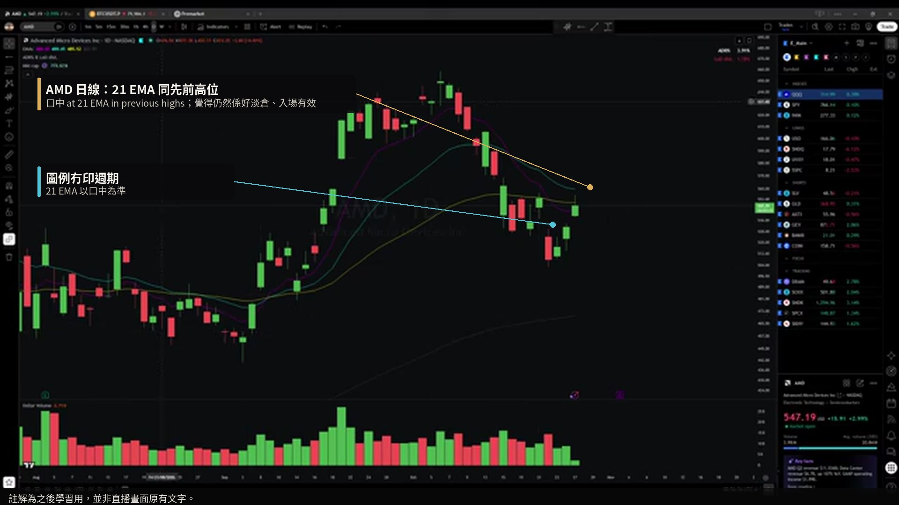
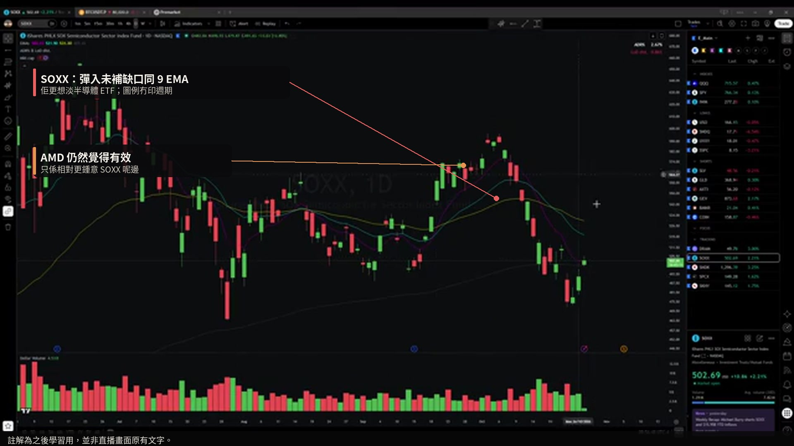

概要
同一板塊，兩隻嘅位置都講清楚
36:21 提到 AMD 在 21 EMA、先前高位，覺得係好淡倉，入場有效。不過自己更想淡半導體 ETF：SOXX 而家彈入未補缺口同 9 EMA。
中間 33:17–36:21 幾分鐘幾乎冇新對白。37:33 之後係 TQQQ 止蝕同成交量問答，冇走圖教學，唔另開一科。
圖一
AMD 日線：21 EMA 同先前高位
直播 37:00

原話
AMD at 21 EMA in previous highs. Yeah, could be, but yeah, I think it's a great short. But I think I would like the shorts that are semis ETF a little bit more, but I think AMD is still a really nice short.
AMD 在 21 EMA、先前高位。可以係，我覺得係一個好好嘅淡倉。不過我更想淡半導體 ETF 嗰啲，但 AMD 我仍然覺得係好好嘅淡倉。
點樣讀
佢冇否定 AMD，只係相對更鍾意板塊 ETF 嘅位置。
21 EMA 以口中為準，圖例冇印週期。畫面 Advanced Micro Devices Inc. 只當圖上文字。
圖二
SOXX：彈入未補缺口同 9 EMA
直播 37:14

原話
I just like how weak the semis ETF is, and now it's bouncing right into the gap, unfilled gap at the 9 EMA. But still, AMD, I think the entry is pretty good. It's valid.
我只係鍾意半導體 ETF 有幾弱，而家佢就彈入呢個缺口，未補缺口，就在 9 EMA。不過 AMD，我仍然覺得入場幾好，係有效嘅。
Whisper 一度把 semis ETF 聽成 The same is ETFAs。以畫面 SOXX 為準。
點樣讀
同上一科嘅 SOXX 下降 9 係同一條思路，呢度再補「未補缺口」同「點解仲講 AMD」。
圖例冇印週期。
附註
注意事項
- 37:33–38:14 有人問 TQQQ 會唔會仍然用 1% 止蝕，以及突破時點樣睇成交量。佢話入場多數唔睇成交量，成交量較多係做拋物線淡倉或者做多先會用。呢段冇對應走圖，唔單獨成科。提到嘅 1% 只保留問句原話，唔當可複製規則。